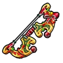

O Atiradorzinho do Noel
Arco · Tier 14 · Nível 43
Apesar dos elfos comuns não gostarem de serem associados aos ajudantes do Papai Noel, parece que eles têm uma afinidade com a criação de arcos.
Atributos
Ataque
1.200
Vida
37
Economia
Valor
12.850.000
Tempo de fabricação
2d 14h
XP do comerciante
320.000
Trabalhadores: Carpinteiro 37, Mestre 33, Ferreiro 30
Receita


Marcos do projeto
4
Tempo de fabricação -25%
10
-117 Madeira
18
-10 Éter
25
Valor +25%
40
Chance de qualidade +1